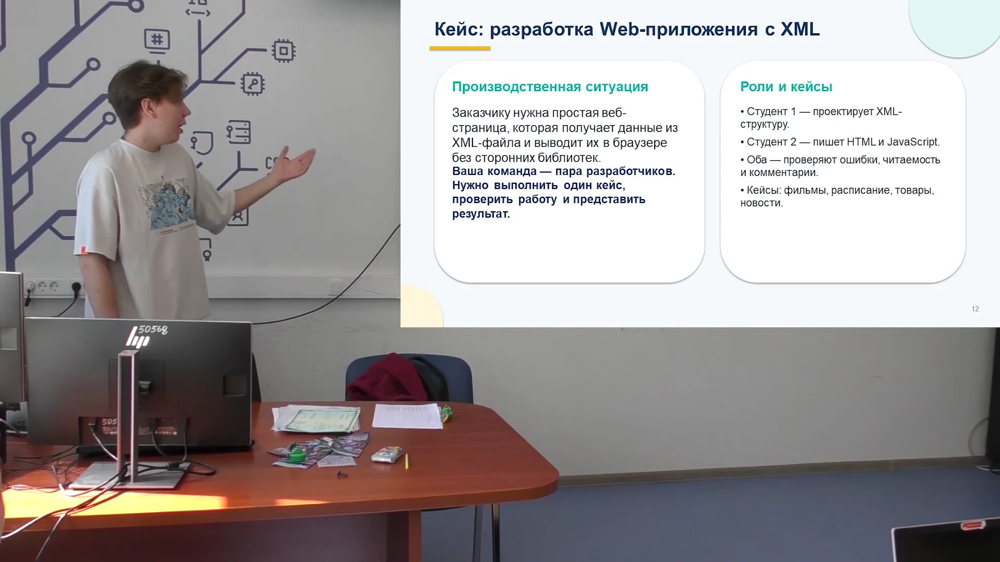

Разработка на React
Соберите интерфейс из компонентов, добавьте поиск и научитесь управлять состоянием приложения.
Перед началом: HTML, CSS, функции и массивы JavaScript, обработчики событий.
Открыть дисциплину ↗Студентам / материалы и практика
Выберите дисциплину, пройдите маршрут и проверьте работу по понятным критериям. Материалы для скачивания собраны на странице каждой темы.
Соберите интерфейс из компонентов, добавьте поиск и научитесь управлять состоянием приложения.
Перед началом: HTML, CSS, функции и массивы JavaScript, обработчики событий.
Открыть дисциплину ↗Опишите данные в XML, проверьте структуру и выведите результат на веб-страницу. Начать можно прямо в браузере.
Перед началом: Основы HTML и JavaScript: строки, массивы, функции и DOM.
Открыть дисциплину ↗Разберитесь, как операционная система распределяет ресурсы, хранит файлы и ограничивает доступ.
Перед началом: Базовое понимание устройства компьютера и работы с файлами.
Открыть дисциплину ↗
Практика без установки программ
Три примера, редактор, проверка структуры и таблица из ваших данных. Можно открыть свой XML, сохранить черновик и скачать результат.
Открыть практикум ↗Напишите тему, что уже получилось и на каком шаге возникла трудность. Для вопроса по коду приложите небольшой воспроизводимый пример.
Написать преподавателю ↗